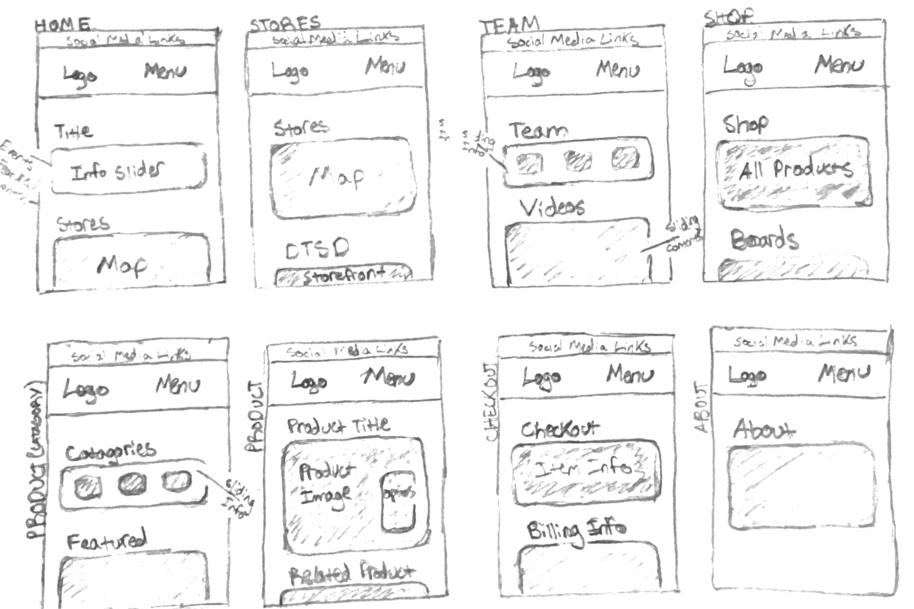
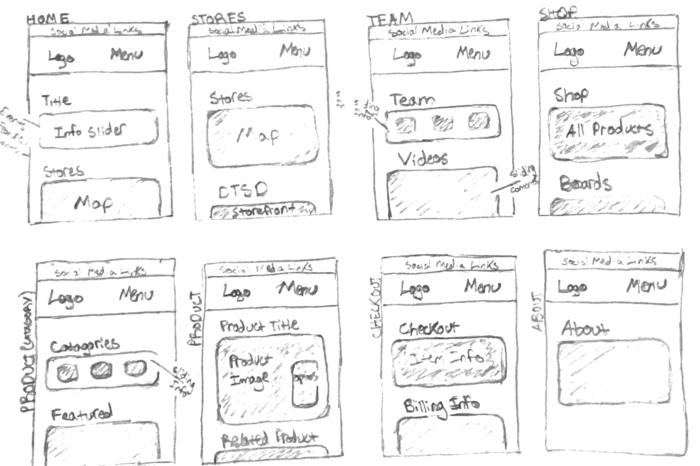
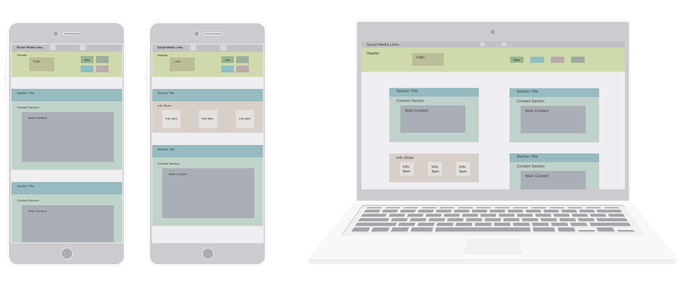
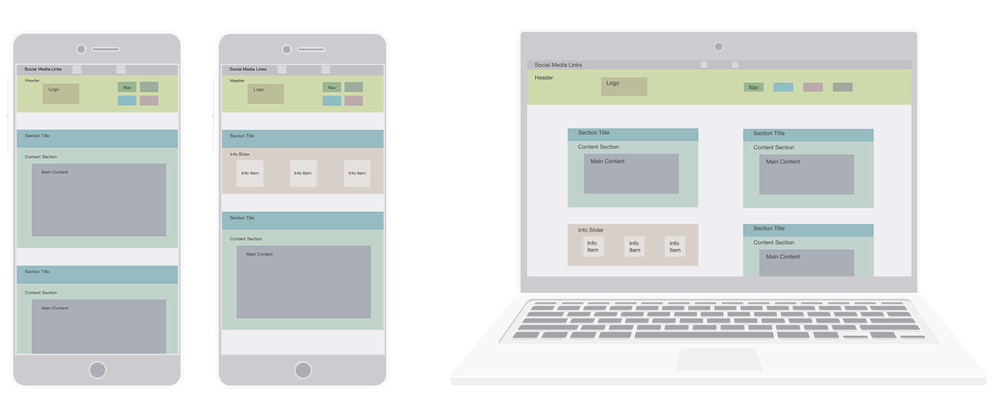
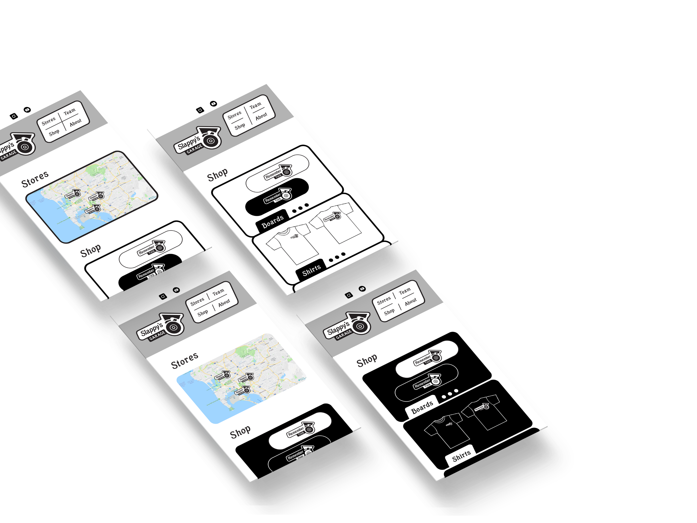
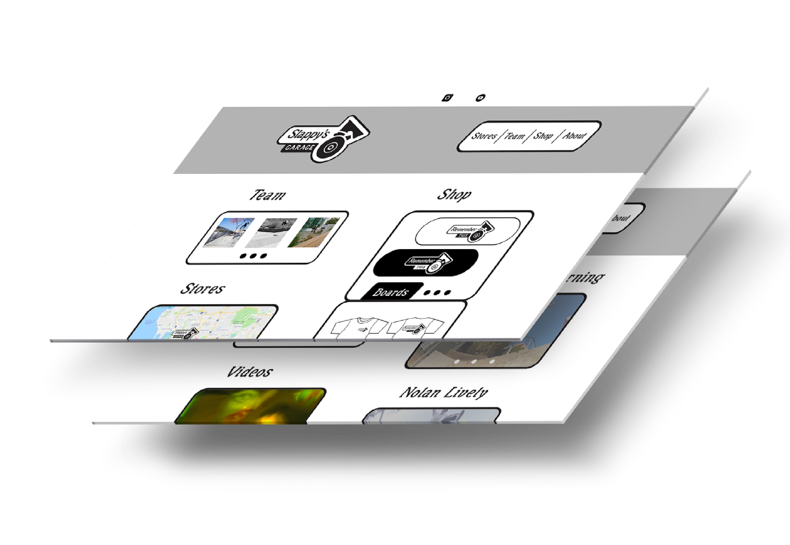

Slappy's Garage UX

 A skateboarder designed web experience, which allows users who are familliar with, or have little prior knowledge of skateboarding to easily acess essential information about Slappy’s Garage.
A skateboarder designed web experience, which allows users who are familliar with, or have little prior knowledge of skateboarding to easily acess essential information about Slappy’s Garage.
My Roles
Brand Strategist, Graphic Designer, Responsive Web Designer
Brand Promise
Inspired by a skateboarders desire to connect to brands through a web experience.
Objective
Responsive website where users can easily find Slappy’s Garage locations, learn about team riders, purchase products, and connect with the shop and skate team on social media.
Outcome
Web and storefront traffic increase for Slappy’s Garage. As well as increased following of Slappy’s
Target Audience
Skateboarders, Youth (10-25), California (San Diego), Urban, Community/Family
Audience Needs
Skateboarders, and other users need easy access information about the skate shop, and particular products Slappy’s Garage carries. They may also want to learn about a skateboard team rider that they know of.

Challenge
Presenting a variety of essential information to users, within a user friendly interface.
Solution
In order to present all the information clearly, I used separated content sections, within a flexible layout. Each section has an optional content slider, so users can slide through content in the selected sections for additional information.
Initial Sketches

 

Design Process
I researched web sites of local skate shops, and other skateboard brands to compare the information they present users. I consistently saw webpages that highlighted options to view and purchase product, but negleted presenting information about where to buy products, and who are the skateboarders associated with the brand.
Slappy’s Garage is a skate shop that has been built for the local (San Diego) community, and the web experience of the skate shop needs to match this. When creating wireframes I focused on giving users easy access to information, by using large content sections. As I began to prototylpe I made sure these content areas were used to give users information about how find the shop, and connect with the skateboarding community.


Wireframes
  Prototypes
 Prototypes
The Story
As I was working with the branding system for Remeber This, the Slappy’s Garage skateboard film, I saw an opportunity to design touchpoints for the skate shop using the same branding. In my research, I learned that Slappy’s Garage hasn’t invested in creating a strong web presence, because they’ve seized an opportunity to open a new location near a cutting edge skatepark. However, this was an opportunity for me to match their web presence and business goals, by using the website to highlight their multiple locations, and the skateboard team who attract skateboarders from the local and global community.

These prototypes, are my first attempts designing the responsive website home and shop pages. I emphasized the store to be at the forefront of the hompage, however, after receiving feedback from my peers, I saw needed to bring more opportunities for users to learn more about the people involved with Slappy’s Garage as well. As you can see I made the change and brought more emphasis to the skateboard team when I designed the desktop pages.

Final Deliverables